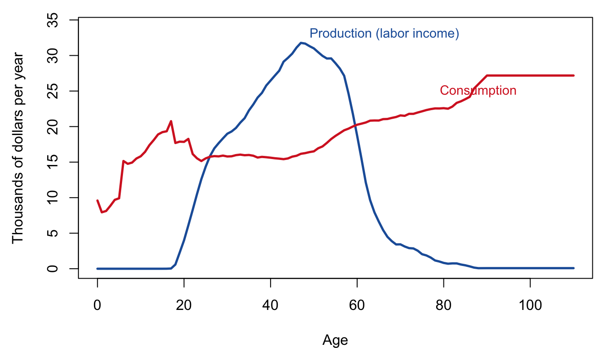
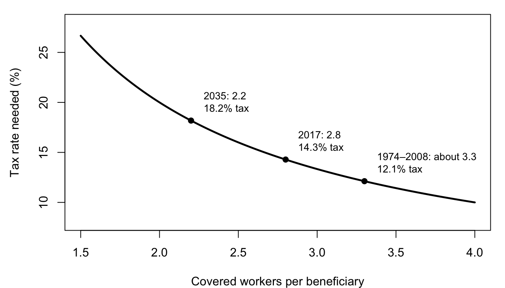

Margin tags mark material that is not in the course slides or lab. Added · from readings comes from the assigned readings (the 2018 Social Security Trustees Report and Lee et al. 2014). Added · new is from outside the course materials (my framing, general knowledge, or my own analysis) and needs the closest check. Untagged material follows the 2025 slides (13–14).
In this chapter. Why every society has to move resources from people in their working years to children and the elderly; how a pay-as-you-go (PAYGO) pension system like U.S. Social Security does this, and why population growth makes it work better; and what the coming decline in the ratio of workers to retirees means for Social Security’s finances.
Readings this chapter draws on.2018 Social Security Trustees Report, Overview, pp. 2–24; Lee et al. (2014), “Is low fertility really a problem? Population aging, dependency, and consumption,” Science (for the age profiles).
Added · new Bridge text written for the chapter split.
This chapter and the next are about age structure: how the mix of young, working-age, and old people shapes an economy. Here we look at public pensions, where the arithmetic of age structure is most direct. Chapter 9 then asks how age structures come about, and what fertility rate would be best for the standard of living.
8.1 A “Ponzi scheme”?
In February 2025, Elon Musk told the podcaster Joe Rogan that “Social Security is the biggest Ponzi scheme of all time.” People pay in, he said, “and the money goes out of Social Security immediately,” while “people are living way longer than expected and there are fewer babies being born.”
Is he right? A Ponzi scheme pays early investors with money from later ones, and collapses when new recruits run out. Social Security does pay today’s retirees with today’s workers’ taxes. So the comparison is not crazy. But whether such a system is a swindle, a sensible arrangement, or something in between depends on demography: on how fast each generation grows relative to the one before. This chapter works out why. Chapter 9 then asks the bigger question behind it: if low fertility makes pensions harder to pay for, should we want more children?
8.2 The life-cycle savings dilemma
8.2.1 Consumption and production by age
People are dependent in childhood, and often again in old age. Yet in general we want to consume at a fairly steady level throughout our lives. The result is a life-cycle dilemma: we produce most of what we will ever produce in a few decades of working life, but we need to consume in every year of life.
The pattern shows up everywhere it has been measured. In lecture we look at age profiles of earnings and consumption for the United States, for urban and rural Côte d’Ivoire, and for the Aché, hunter-gatherers of the Amazon. Aché children run a food “deficit,” consuming more calories than they produce, until their late teens. Adults run a “surplus” that peaks in their thirties.
Figure 8.1 shows the same thing for Japan, using the data from the lab: the value of what people produce (labor income) and consume at each age, in U.S. dollars per person per year.
Show the R code
op <-par(mar =c(4, 4.5, 1, 1))plot(x, yx /1000, type ="l", lwd =2.5, col = col_y, ylim =c(0, 34),xlab ="Age", ylab ="Thousands of dollars per year")lines(x, cx /1000, lwd =2.5, col = col_c)text(47, 33, "Production (labor income)", col = col_y, pos =4, cex =0.9)text(88, 25, "Consumption", col = col_c, cex =0.9)par(op)

Figure 8.1: Per capita labor income (production) and consumption by age, Japan, in U.S. dollars per year. Consumption includes publicly provided education and health care. The profiles are held constant above about age 90 in the data. Source: National Transfer Accounts (lab data).
Children produce nothing, and their consumption jumps in the school years (education is counted as consumption). Labor income rises steeply in the twenties, peaks in the late forties, and falls away in the sixties. Consumption rises again in old age, largely because of health care.
Added · from readings The National Transfer Accounts and the U.S.–Thailand comparison are from Lee et al. 2014 (text and Fig. 1).
Profiles like these come from the National Transfer Accounts (NTA), a project in which research teams in 40 countries used “existing surveys, administrative data, and the United Nations System of National Accounts” to estimate what people produce and consume at each age. The profiles differ in revealing ways. In the United States, Lee and coauthors write, “elderly consume far more than young adults and labor income falls off rapidly at older ages,” and public transfers to the elderly are generous. In Thailand, “elderly and young adults consume at similar levels,” the elderly earn somewhat more than in the United States, the public system for the elderly is “very modest,” and “familial support is very important.”
8.2.2 Three ways to solve the dilemma
How can the young and the old consume more than they produce?
Private transfers. Children “borrow” from their parents, who feed and raise them, and pay them back when the parents grow old. (What could go wrong?)
Public transfers. The government taxes people in the surplus ages and redistributes to the deficit ages. (What could go wrong?)
Private savings. People save their own surplus during their working years and live on it in old age. This requires goods that last, or else you still have to rely on a younger generation to sell you what you need. (What could go wrong?) And it doesn’t help you as a child.
Added · from readings Lee et al. 2014.
Lee and coauthors put the first two together under the heading of intergenerational transfers, which “shift resources from some generations to others with no expectation of direct repayment.” Private transfers occur “when parents rear their children and when older people assist their adult children or alternatively receive assistance from them.” Public transfers include “public education, publicly funded health care, public pensions, and the taxes to pay for these programs.” In rich countries the two flow in opposite directions: “public transfers are predominantly to the elderly, while private transfers go mostly to children.”
8.3 A worked example: walnuts and chocolate
To see how population growth affects these solutions, consider a stylized economy. Make some simplifying (but not essential) assumptions:
Life has two stages, “middle age” and “old age,” one generation apart.
No one dies until the end of old age.
Everyone wants perfectly smooth consumption.
Each person produces 18 units in middle age and 6 in old age.
A. A “nut” economy with durable goods. Suppose output is walnuts, which keep. Each person can simply save. Lifetime production is 18 + 6 = 24, so smoothed consumption is 12 per period, 24 per lifetime.
B. A “chocolate” economy with no durable goods, and zero population growth. Chocolate melts, so it can’t be saved. To smooth consumption, the middle-aged must transfer to the old. With 100 middle-aged and 100 old people, total output is 100 × 18 + 100 × 6 = 2,400, shared among 200 people: 12 per person per period, 24 per lifetime. Transfers do exactly as well as saving.
C. A chocolate economy where each generation is twice the size of the last. Now there are 200 middle-aged and 100 old people. Total output is 200 × 18 + 100 × 6 = 4,200, shared among 300 people: 14 per person per period, 28 per lifetime.
Table 8.1: Smoothed consumption in the walnut and chocolate economies (lecture example). Production is 18 in middle age and 6 in old age.
Economy
Middle-aged : old
Consumption per period
Consumption per lifetime
A. Walnuts (saving)
—
12
24
B. Chocolate, constant generation size
100 : 100
12
24
C. Chocolate, each generation doubles
200 : 100
14
28
In the growing chocolate economy, everyone, in every generation, consumes more over their life than they produce. Where does the extra come from? Each generation receives more in old age than it gave in middle age, because there are more workers behind it. A growing population creates what we call transfer wealth.
So, for transfers from young to old like Social Security, population growth is good:
it increases lifetime consumption,
by creating “transfer” wealth,
and, in our example, it does better than private saving of durable goods.
Added · new Samuelson is credited from Lee et al.’s reference list (Samuelson 1958); the description of his result is mine.
When are transfers and saving equally good? When the interest rate on savings equals the population growth rate plus the growth rate of wages. Then each dollar paid into a transfer system earns the same “return” as a dollar invested. This insight goes back to a famous 1958 paper by the economist Paul Samuelson. When population and wages grow faster than the interest rate, transfers beat saving. When they grow more slowly, saving wins.
8.4 The PAYGO identity
A pay-as-you-go (PAYGO) pension system is one in which each year’s benefits are paid out of the same year’s taxes:
Break each side into an amount per person times a number of people. Let \(b\) be the benefit per old person, \(N_O\) the number of old people, \(t\) the tax rate, \(y\) the earnings per worker, and \(N_W\) the number of workers. Then
The replacement rate\(b/y\) is how large the average benefit is compared with the average wage. The old-age dependency ratio\(N_O/N_W\) is the number of beneficiaries per worker. The identity is just accounting, but it is powerful. It tells us exactly how the tax rate, the generosity of benefits, and demography have to fit together.
A worked example. In 2023 the United States had about 180 million workers paying Social Security taxes and about 60 million beneficiaries. Suppose we want a replacement rate of 40 percent. Then the tax rate must be
Added · from readings Payroll tax rates, the earnings cap, and the 2017 beneficiary counts are from the 2018 Trustees Report, pp. 2 and 7–8.
That is close to the real thing. In 2017, employees and employers each paid 6.2 percent of covered earnings, for a combined OASDI (Old-Age, Survivors, and Disability Insurance) payroll tax of 12.4 percent, on earnings up to $127,200. Payroll taxes made up 88 percent of the trust funds’ income.
Actual Social Security has many details that our identity ignores. It is progressive, giving higher replacement rates to the poor than to the rich. It pays benefits to the disabled and to children whose parents die, as well as to retirees. Benefits are indexed to inflation, and the retirement age and working years are indexed too. And the tax is based on taxable wages, not on the entire economy. The Trustees Report shows how much the “details” matter. At the end of 2017, Social Security was paying benefits to about 62 million people: “45 million retired workers and dependents of retired workers, 6 million survivors of deceased workers, and 10 million disabled workers and dependents of disabled workers.”
8.5 Demographic change and Social Security’s future
8.5.1 Fewer workers per beneficiary
Added · from readings Numbers and quotations in this subsection are from the 2018 Trustees Report, pp. 2–6, 12–14, and 23. The slides show the corresponding figures from the 2024 report, which has somewhat different numbers (for example, payable benefits of 83 percent in 2035).
The Trustees Report explains why Social Security’s costs are rising faster than its income:
In their own words
“Projected OASDI cost increases more rapidly than projected non-interest income through 2039 primarily because the retirement of the baby-boom generation will increase the number of beneficiaries much faster than the number of covered workers increases, as subsequent lower-birth-rate generations replace the baby-boom generation at working ages.” (2018 Trustees Report, p. 4)
The number of covered workers per beneficiary “had been stable, remaining between 3.2 and 3.4 from 1974 through 2008.” It was about 2.8 in 2017, and the Trustees project it will fall to 2.2 by 2035, “when the baby-boom generation will have largely retired,” and then decline “very gradually thereafter due to increasing longevity.”
The PAYGO identity turns these numbers directly into tax rates. Figure 8.2 shows the tax rate needed to pay a 40 percent replacement rate at each ratio of workers to beneficiaries.

Figure 8.2: The PAYGO identity: the payroll tax rate needed to fund a 40 percent replacement rate, by the number of workers per beneficiary. Marked points use the Trustees’ figures for 1974–2008, 2017, and 2035.
At about 3.3 workers per beneficiary, a 40 percent replacement rate costs a 12 percent tax. At 2.2, it costs 18 percent. Nothing about the generosity of the system has changed. The difference is entirely demographic.
8.5.2 Running out the trust fund
Social Security is not purely PAYGO. For decades it collected more than it paid out and built up a reserve, the trust funds, which held $2.9 trillion at the end of 2017. But the Trustees projected that in 2018 total cost would exceed total income “for the first time since 1982,” so reserves would begin to fall. The cost of the program, measured as a share of taxable payroll (the “cost rate”), rises from 13.81 percent in 2018 to 16.83 percent in 2039, while the income rate stays “stable at about 13 percent.” The combined reserves would be depleted in 2034.
Added · new The explanation of why Social Security has a trust fund at all (it ran surpluses for decades) is my framing. The report states the reserve amounts.
What happens then? Not a total collapse. Under current law, benefits can only be paid out of current income once the reserves are gone. “At the time of depletion of these combined reserves, continuing income to the combined trust funds would be sufficient to pay 79 percent of scheduled benefits,” falling to 74 percent by 2092. In other words, after 2034 the system becomes PAYGO again, and the PAYGO identity decides what can be paid.
8.5.3 How can we adapt?
With the PAYGO identity, there are only three options:
raise taxes,
cut benefits,
or a partial combination of the two.
The Trustees put numbers on these choices. To keep the system solvent for the next 75 years, “revenues would have to increase by an amount equivalent to an immediate and permanent payroll tax rate increase of 2.78 percentage points” (to 15.18 percent), or “scheduled benefits would have to be reduced by an amount equivalent to an immediate and permanent reduction of about 17 percent applied to all current and future beneficiaries, or about 21 percent if the reductions were applied only to those who become initially eligible for benefits in 2018 or later.” Waiting makes it worse. If nothing is done until 2034, the tax increase becomes 3.87 percentage points or the benefit cut 23 percent, because “the changes necessary to maintain Social Security solvency would be concentrated on fewer years and fewer generations.”
One popular proposal, as a reader asked the newsletter Tangle in 2025, is to lift the cap on taxable earnings, then about $176,000 a year. In terms of the PAYGO identity, that is a special case of the first option: higher taxes, falling on higher earners. Combined with slower benefit growth for the best-off, it amounts to a combination of raising taxes and reducing benefits.
8.6 Winners and losers in PAYGO
8.6.1 Transitions
Who gains from starting a PAYGO system? Suppose a system starts in period 0. In every period from then on, the young (age I) pay 6 and the old (age II) receive 6. Follow each birth cohort diagonally through Table 8.2.
Table 8.2: Starting and ending a PAYGO system (lecture example). Each cohort is young in one period and old in the next.
Period −1
0
1
2
3
4
Age II (old)
0
+6
+6
+6
+6
0
Age I (young)
0
−6
−6
−6
−6
0
The cohort that is old in period 0 receives 6 without ever having paid anything. That is a windfall gain. Every cohort in between pays 6 when young and gets 6 back when old. And if the system is ended in period 4, the cohort that paid 6 in period 3 gets nothing back. Those are the transition costs. This is why it is almost impossible to leave a PAYGO system. Someone, the generation caught at the end, would have to pay twice: once for their parents’ pensions and again for their own.
8.6.2 The implicit rate of return
To compare Social Security with an investment, imagine that all taxes are paid at age 40 and all benefits received at age 70. Then the implicit annual return on a PAYGO “contribution” is
\[
P = \frac{\log(\text{benefit} \times \text{chance of still being alive} / \text{tax})}{\text{time}}.
\]
Martin Feldstein reports estimates (from a study by Dean Leimer) based on the actual history of taxes, benefits, and survival in U.S. Social Security (Table 8.3).
Table 8.3: Internal rate of return on Social Security (OASI) by birth cohort. Source: Leimer (1994), as reported by Feldstein (lecture slide). Assumes PAYGO balance in the future and adjusts for inflation; mixes rich and poor.
Birth cohort
Internal rate of return (%)
1876
36.5
1900
11.9
1925
4.8
1950
2.2
1975
1.9
2000
1.7
The earliest cohorts got a fabulous deal. These were the windfall generations, who paid in for only part of their working lives and then collected full benefits. Later cohorts get about 2 percent. Is that a good deal? It is about what you would earn on a risk-free investment like Treasury bills, and less than the stock market’s average return. But Social Security insures against many risks that an investment account doesn’t. It is an annuity, protecting against outliving your money (or dying early). It protects against mistiming the market, such as retiring in 2008. And it protects against the variation in investment returns from person to person.
8.6.3 Other countries
For many other industrial countries the story is less favorable: their demography is older, and their benefits are higher. Using the PAYGO identity with old-age dependency ratios projected to 2050 gives very high implied tax rates (Table 8.4).
Table 8.4: Implied PAYGO payroll tax rates with old-age dependency ratios projected to 2050. Source: Ron Lee’s calculations from data in Gruber and Wise (lecture slide).
Country
Replacement rate
Old-age dependency ratio
Implied payroll tax rate
France
0.91
0.55
0.50
Italy
0.75
0.58
0.44
Spain
0.63
0.60
0.38
Japan
0.54
0.59
0.32
US
0.41
0.41
0.17
8.7 Key ideas
Every society faces a life-cycle dilemma: people produce in mid-life but consume throughout life. Private transfers, public transfers, and saving are the three solutions.
In a PAYGO system, population growth creates transfer wealth. Transfers beat saving when population growth plus wage growth exceeds the interest rate.
As the ratio of workers to beneficiaries falls from about 3.3 to 2.2, Social Security must raise taxes, cut benefits, or both. Without action, the trust funds run out in the 2030s, and benefits fall to what current taxes can pay.
Starting a PAYGO system gives a windfall to the first old generation. Ending one imposes transition costs, which makes it almost impossible to leave.
8.8 Check your understanding
Added · new Q4 uses the example on your slide 14-07. The others are new and avoid the lab’s graded questions and the in-class Peru problem.
A shrinking chocolate economy. In the walnut-and-chocolate example, suppose each generation is half the size of the one before: 50 middle-aged and 100 old. What is smoothed consumption per period and per lifetime? Compare it with the walnut economy.
Taxes in 2035. Use the PAYGO identity with a 40 percent replacement rate and the Trustees’ projection of 2.2 workers per beneficiary in 2035. What tax rate is needed?
Or cut benefits? Suppose instead the tax rate stays at 13 percent. What replacement rate can be paid with 2.2 workers per beneficiary?
Implicit return. If there are twice as many payers as beneficiaries, each worker pays a tax of 4, each retiree receives a benefit of 8, everyone survives, and taxes and benefits are 30 years apart, what is the implicit annual rate of return?
Why the trust fund runs down. The Trustees say the cost rate rises until about 2039, then declines, and then “increases in life expectancy cause OASDI cost to increase generally relative to non-interest income, but more slowly.” Explain each phase in terms of the old-age dependency ratio.
8.9 Further reading
Board of Trustees, Federal Old-Age and Survivors Insurance and Federal Disability Insurance Trust Funds. 2018. The 2018 Annual Report of the Board of Trustees. Overview, pp. 2–24. As you read: Find the number of workers per beneficiary in 2017 and 2035. What happens to benefits when the trust funds are depleted? What options do the Trustees give lawmakers?